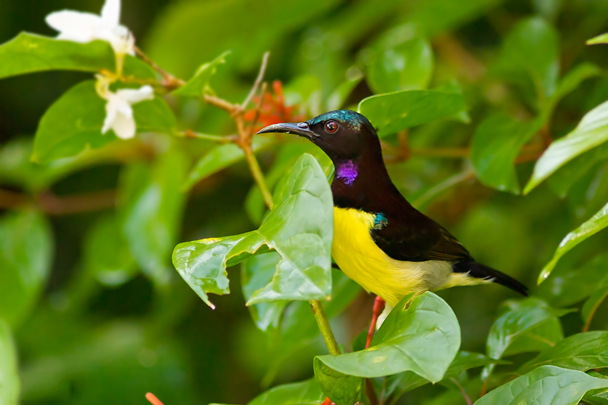
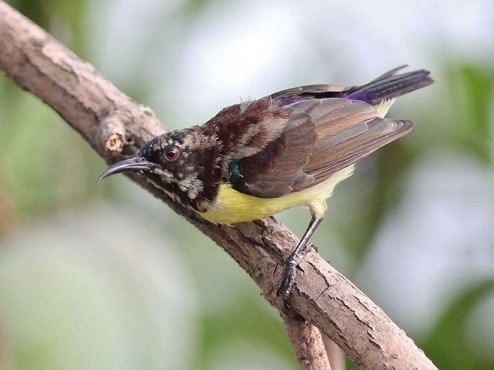

The Purple-rumped Sunbird is a tiny, energetic nectar-feeding bird found across India. Its iridescent plumage and rapid movements make it a lively presence in gardens and wooded areas.

This sunbird thrives in gardens, scrublands, and urban parks. It feeds on nectar, insects, and spiders, builds hanging pouch-like nests, and is active throughout the day with swift, darting flights.
Read more about this bird and its wonderous characteristics on portals like E-Bird.